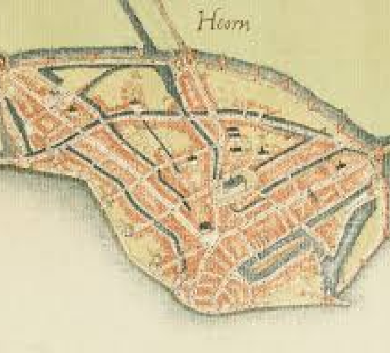

Origin of Hoorn
Hoorn was created in the 12th century as a village at the zuiderzee. The area was typical for the Netherlands and was swampy, But because of inpolderingen the land could be used to build on. The village came to be because of its trade position. Hoorn got its city rights around the year 1357, wich was posible because of economic development of the trade of fish.
